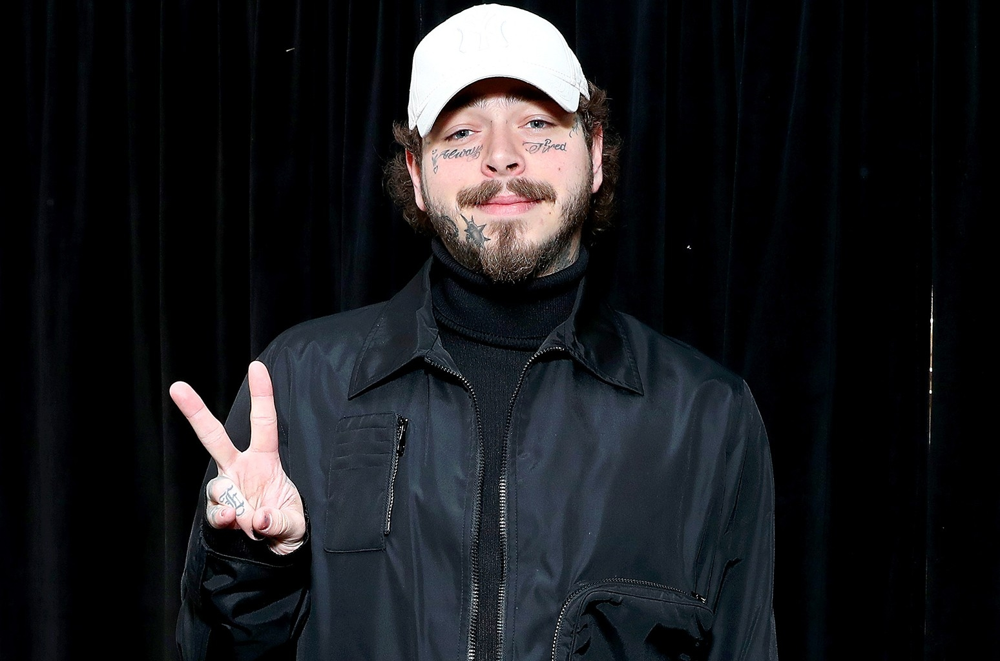

Post Malone
Post Malone, cuyo nombre real es Austin Richard Post, nació el 4 de julio de 1995 en Syracuse, Nueva York. Comenzó a interesarse por la música a una edad temprana y, tras mudarse a Grapevine, Texas, en su adolescencia, comenzó a experimentar con la producción musical y a subir sus creaciones a Internet.
Su carrera despegó en 2015 con el lanzamiento de su sencillo debut "White Iverson", una canción que hizo referencia al jugador de baloncesto Allen Iverson. El éxito de esta canción llamó la atención de importantes figuras de la industria musical y le permitió firmar un contrato con Republic Records.
En 2016, lanzó su primer álbum de estudio, Stoney, que incluía éxitos como "Congratulations" y "Go Flex". Su estilo único, que mezcla hip-hop, R&B y rock, le ganó una gran base de seguidores.

En 2016, lanzó su primer álbum de estudio, Stoney, que incluía éxitos como "Congratulations" y "Go Flex". Su estilo único, que mezcla hip-hop, R&B y rock, le ganó una gran base de seguidores.
Post Malone continuó su éxito con su segundo álbum, Beerbongs & Bentleys (2018), que incluyó éxitos como "Rockstar" y "Psycho". El álbum recibió elogios de la crítica y muchos premios.
En 2019, lanzó Hollywood's Bleeding, un álbum que consolidó aún más su estatus como uno de los artistas más influyentes de su generación, con sencillos populares como "Sunflower" y "Circles".
A lo largo de su carrera, Post Malone ha sido reconocido por su habilidad para fusionar géneros y por sus letras introspectivas. Ha recibido numerosos premios y nominaciones, y ha establecido una sólida presencia en la cultura pop.